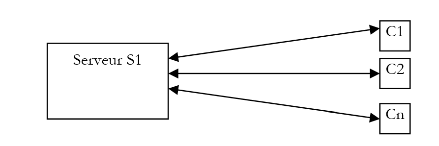
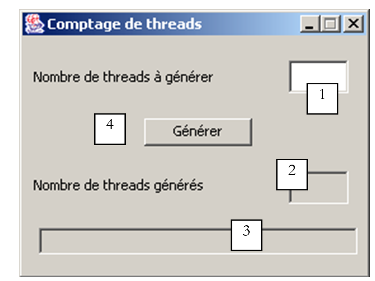

7. الخيوط
7.1. مقدمة
عند تشغيل أحد التطبيقات، يتم تنفيذه في تدفق تنفيذ يُسمى مؤشر ترابط. الفئة التي تمثل مؤشر الترابط هي فئة java.lang.Thread، والتي تحتوي على الخصائص والطرق التالية:
تُرجع الخيط الذي يعمل حاليًا | |
تعيّن اسم الخيط | |
اسم الخيط | |
يشير إلى ما إذا كان الخيط نشطًا (صحيح) أم لا (خطأ) | |
يبدأ تنفيذ الخيط | |
يتم تنفيذ هذه الطريقة تلقائيًا بعد تنفيذ طريقة start السابقة | |
توقف تنفيذ مؤشر الترابط لمدة n مللي ثانية | |
عملية حجب — تنتظر انتهاء الخيط قبل الانتقال إلى التعليمات التالية |
فيما يلي المنشئات الأكثر استخدامًا:
ينشئ مرجعًا لمهمة غير متزامنة. هذه المهمة لا تزال غير نشطة. يجب أن تحتوي المهمة التي تم إنشاؤها على طريقة تشغيل: في أغلب الأحيان، سيتم استخدام فئة مشتقة من Thread. | |
مثل ما سبق، لكن الكائن Runnable الذي يتم تمريره كمعلمة ينفذ طريقة run. |
دعونا نلقي نظرة على تطبيق بسيط يوضح وجود مؤشر ترابط تنفيذ رئيسي — وهو المؤشر الذي تعمل فيه الدالة الرئيسية للفئة:
// use of threads
import java.io.*;
import java.util.*;
public class thread1{
public static void main(String[] arg)throws Exception {
// init current thread
Thread main=Thread.currentThread();
// display
System.out.println("Thread courant : " + main.getName());
// we change the name
main.setName("myMainThread");
// check
System.out.println("Thread courant : " + main.getName());
// infinite loop
while(true){
// time recovery
Calendar calendrier=Calendar.getInstance();
String H=calendrier.get(Calendar.HOUR_OF_DAY)+":"
+calendrier.get(Calendar.MINUTE)+":"
+calendrier.get(Calendar.SECOND);
// display
System.out.println(main.getName() + " : " +H);
// temporary shutdown
Thread.sleep(1000);
}//while
}//hand
}//class
إخراج الشاشة:
Thread courant : main
Thread courant : myMainThread
myMainThread : 15:34:9
myMainThread : 15:34:10
myMainThread : 15:34:11
myMainThread : 15:34:12
Terminer le programme de commandes (O/N) ? o
يوضح المثال السابق النقاط التالية:
- تعمل الدالة الرئيسية بشكل صحيح في مؤشر ترابط
- يمكننا الوصول إلى خصائص هذا الخيط عبر Thread.currentThread()
- دور طريقة sleep. هنا، يظل الخيط الذي ينفذ main في حالة سكون لمدة ثانية واحدة بين كل عرض.
7.2. إنشاء خيوط التنفيذ
من الممكن أن تكون هناك تطبيقات حيث يتم تنفيذ أجزاء من الكود "بشكل متزامن" في خيوط تنفيذ مختلفة. عندما نقول أن الخيوط تعمل بشكل متزامن، فإننا غالبًا ما نستخدم المصطلح بشكل فضفاض. إذا كان الجهاز يحتوي على معالج واحد فقط، كما هو الحال في كثير من الأحيان، فإن الخيوط تتشارك هذا المعالج: حيث يمكن لكل منها الوصول إليه، بالتناوب، لفترة وجيزة (بضع ميلي ثوانٍ). وهذا ما يخلق الوهم بالتنفيذ المتوازي. يعتمد مقدار الوقت المخصص لخيط على عوامل مختلفة، بما في ذلك أولويته، التي لها قيمة افتراضية ولكن يمكن أيضًا تعيينها برمجيًا. عندما يكون الخيط هو صاحب المعالج، فإنه عادةً ما يستخدمه طوال الوقت المخصص له. ومع ذلك، يمكنه تحريره مبكرًا:
- عن طريق انتظار حدث (wait، join)
- عن طريق السكون لفترة محددة (sleep)
- يمكن إنشاء مؤشر ترابط T بطرق مختلفة
- عن طريق توسيع فئة Thread وتجاوز طريقة run الخاصة بها.
- عن طريق تنفيذ واجهة Runnable في فئة واستخدام منشئ new Thread(Runnable). Runnable هي واجهة تحدد طريقة واحدة فقط: public void run(). وبالتالي، فإن وسيطة المنشئ السابق هي أي مثيل فئة ينفذ طريقة run هذه.
في المثال التالي، يتم إنشاء الخيوط باستخدام فئة مجهولة تمتد فئة Thread:
تقوم طريقة run هنا ببساطة باستدعاء طريقة display.
- يتم بدء تنفيذ الخيط T بواسطة T.start(): تنتمي هذه الطريقة إلى فئة Thread وتقوم بعدد من عمليات التهيئة قبل استدعاء طريقة run الخاصة بـ Thread أو واجهة Runnable تلقائيًا. لا ينتظر البرنامج الذي ينفذ عبارة T.start() انتهاء المهمة T: بل ينتقل فورًا إلى العبارة التالية. وبذلك يكون لدينا مهمتان تعملان بالتوازي. وغالبًا ما تحتاجان إلى التواصل مع بعضهما البعض لمعرفة حالة العمل المشترك المطلوب إنجازه. وهذه هي مشكلة تزامن الخيوط.
- بمجرد بدء التشغيل، يعمل الخيط بشكل مستقل. وسيتوقف عندما تنتهي وظيفة run التي يقوم بتنفيذها من عملها.
- يمكننا انتظار انتهاء تنفيذ الخيط T باستخدام T.join(). هذه تعليمات حجب: يتم حجب البرنامج الذي ينفذها حتى تنتهي المهمة T من عملها. وهي أيضًا وسيلة للتزامن.
دعونا ندرس البرنامج التالي:
// use of threads
import java.io.*;
import java.util.*;
public class thread2{
public static void main(String[] arg) {
// init current thread
Thread main=Thread.currentThread();
// give a name to the current thread
main.setName("myMainThread");
// start of hand
System.out.println("début du thread " +main.getName());
// creation of execution threads
Thread[] tâches=new Thread[5];
for(int i=0;i<tâches.length;i++){
// create thread i
tâches[i]=new Thread() {
public void run() {
affiche();
}
};//def tasks[i]
// set the thread name
tâches[i].setName(""+i);
// start execution of thread i
tâches[i].start();
}//for
// end of hand
System.out.println("fin du thread " +main.getName());
}//Main
public static void affiche() {
// time recovery
Calendar calendrier=Calendar.getInstance();
String H=calendrier.get(Calendar.HOUR_OF_DAY)+":"
+calendrier.get(Calendar.MINUTE)+":"
+calendrier.get(Calendar.SECOND);
// display start of execution
System.out.println("Début d'exécution de la méthode affiche dans le Thread " +
Thread.currentThread().getName()+ " : " + H);
// sleep for 1 s
try{
Thread.sleep(1000);
}catch (Exception ex){}
// time recovery
calendrier=Calendar.getInstance();
H=calendrier.get(Calendar.HOUR_OF_DAY)+":"
+calendrier.get(Calendar.MINUTE)+":"
+calendrier.get(Calendar.SECOND);
// display end of run
System.out.println("Fin d'exécution de la méthode affiche dans le Thread "
+Thread.currentThread().getName()+ " : " + H);
}// poster
}//class
يقوم الخيط الرئيسي، الذي ينفذ الدالة الرئيسية، بإنشاء 5 خيوط أخرى مسؤولة عن تنفيذ الدالة الثابتة display. النتائج هي كما يلي:
début du thread myMainThread
Début d'exécution de la méthode affiche dans le Thread 0 : 15:48:3
fin du thread myMainThread
Début d'exécution de la méthode affiche dans le Thread 1 : 15:48:3
Début d'exécution de la méthode affiche dans le Thread 2 : 15:48:3
Début d'exécution de la méthode affiche dans le Thread 3 : 15:48:3
Début d'exécution de la méthode affiche dans le Thread 4 : 15:48:3
Fin d'exécution de la méthode affiche dans le Thread 0 : 15:48:4
Fin d'exécution de la méthode affiche dans le Thread 1 : 15:48:4
Fin d'exécution de la méthode affiche dans le Thread 2 : 15:48:4
Fin d'exécution de la méthode affiche dans le Thread 3 : 15:48:4
Fin d'exécution de la méthode affiche dans le Thread 4 : 15:48:4
هذه النتائج مفيدة للغاية:
- أولاً، نرى أن بدء تنفيذ الخيط لا يؤدي إلى حجب. بدأت الطريقة الرئيسية تنفيذ 5 خيوط بالتوازي وانتهت من التنفيذ قبلها. العملية
تبدأ تنفيذ مؤشر الترابط tasks[i]، ولكن بمجرد الانتهاء من ذلك، يستمر التنفيذ فورًا مع العبارة التالية دون انتظار انتهاء مؤشر الترابط.
- يجب أن تنفذ جميع الخيوط التي تم إنشاؤها طريقة العرض. ترتيب التنفيذ غير متوقع. على الرغم من أن ترتيب التنفيذ في المثال يبدو أنه يتبع الترتيب الذي تم فيه تشغيل الخيوط، لا يمكن استخلاص أي استنتاجات عامة من ذلك. يحتوي نظام التشغيل هنا على 6 خيوط ومعالج واحد. وسيقوم بتخصيص المعالج لهذه الخيوط الست وفقًا لقواعده الخاصة.
- تُظهر النتائج تأثير طريقة sleep. في المثال، يكون الخيط 0 هو أول من ينفذ طريقة display. يتم عرض رسالة بدء التنفيذ، ثم ينفذ طريقة sleep، التي تعلقه لمدة ثانية واحدة. ثم يفقد المعالج، الذي يصبح متاحًا لخيط آخر. يوضح المثال أن الخيط 1 سيحصل عليه. سيتبع الخيط 1 نفس مسار الخيوط الأخرى. عندما تنتهي فترة السكون التي تبلغ ثانية واحدة للخيط 0، يمكن استئناف تنفيذه. يمنحه النظام المعالج، ويمكنه إكمال تنفيذ طريقة العرض.
دعونا نعدل برنامجنا لإنهاء طريقة *main* بالتعليمات التالية:
// end of hand
System.out.println("fin du thread " +main.getName());
// application shutdown
System.exit(0);
يؤدي تشغيل البرنامج الجديد إلى:
début du thread myMainThread
Début d'exécution de la méthode affiche dans le Thread 0 : 16:5:45
Début d'exécution de la méthode affiche dans le Thread 1 : 16:5:45
Début d'exécution de la méthode affiche dans le Thread 2 : 16:5:45
Début d'exécution de la méthode affiche dans le Thread 3 : 16:5:45
fin du thread myMainThread
Début d'exécution de la méthode affiche dans le Thread 4 : 16:5:45
بمجرد أن تنفذ الطريقة الرئيسية العبارة:
تتوقف جميع مؤشرات الترابط الخاصة بالتطبيق، وليس مؤشر الترابط الرئيسي فقط. قد ترغب الطريقة الرئيسية في انتظار انتهاء تنفيذ مؤشرات الترابط التي أنشأتها قبل إنهاء نفسها. يمكن القيام بذلك باستخدام طريقة join الخاصة بفئة Thread:
// waiting for all threads
for(int i=0;i<tâches.length;i++){
// we wait for thread i
tâches[i].join();
}//for
// end of hand
System.out.println("fin du thread " +main.getName());
// application shutdown
System.exit(0);
ينتج عن هذا النتائج التالية:
début du thread myMainThread
Début d'exécution de la méthode affiche dans le Thread 0 : 16:11:9
Début d'exécution de la méthode affiche dans le Thread 1 : 16:11:9
Début d'exécution de la méthode affiche dans le Thread 2 : 16:11:9
Début d'exécution de la méthode affiche dans le Thread 3 : 16:11:9
Début d'exécution de la méthode affiche dans le Thread 4 : 16:11:9
Fin d'exécution de la méthode affiche dans le Thread 0 : 16:11:10
Fin d'exécution de la méthode affiche dans le Thread 1 : 16:11:10
Fin d'exécution de la méthode affiche dans le Thread 2 : 16:11:10
Fin d'exécution de la méthode affiche dans le Thread 3 : 16:11:10
Fin d'exécution de la méthode affiche dans le Thread 4 : 16:11:10
fin du thread myMainThread
7.3. فوائد الخيوط
الآن بعد أن أبرزنا وجود مؤشر ترابط افتراضي — وهو الذي ينفذ الطريقة Main — ونعرف كيفية إنشاء مؤشرات ترابط أخرى، دعونا ننظر في فوائد مؤشرات الترابط بالنسبة لنا ولماذا نعرضها هنا. هناك نوع من التطبيقات يناسب استخدام الخيوط بشكل جيد: تطبيقات العميل-الخادم على الإنترنت. في مثل هذا التطبيق، يستجيب خادم موجود على الجهاز S1 لطلبات العملاء الموجودين على أجهزة بعيدة C1، C2، ...، Cn.

نستخدم تطبيقات الإنترنت التي تتبع هذا النمط كل يوم: خدمات الويب، والبريد الإلكتروني، وتصفح المنتديات، ونقل الملفات... في الرسم البياني أعلاه، يجب أن يخدم الخادم S1 العملاء C1، C2، ...، Cn في وقت واحد. إذا أخذنا مثال خادم FTP (بروتوكول نقل الملفات) الذي يوصل الملفات إلى عملائه، فإننا نعلم أن نقل الملفات قد يستغرق أحيانًا عدة ساعات. وبالطبع، من المستحيل أن يحتكر عميل واحد الخادم لفترة طويلة كهذه. ما يحدث عادةً هو أن الخادم ينشئ عددًا من خيوط التنفيذ يساوي عدد العملاء. ثم يكون كل خيط مسؤولاً عن التعامل مع عميل معين. ونظرًا لأن المعالج يتم مشاركته بشكل دوري بين جميع الخيوط النشطة على الجهاز، فإن الخادم يقضي وقتًا قصيرًا مع كل عميل، مما يضمن تزامن الخدمة.

7.4. تطبيق ساعة رسومية
لننظر إلى التطبيق التالي، الذي يعرض نافذة تحتوي على ساعة وزر لإيقاف الساعة أو إعادة تشغيلها:
 |  |  |
لكي تعمل الساعة، يجب أن تقوم عملية ما بتحديث الوقت كل ثانية. وفي الوقت نفسه، يجب مراقبة الأحداث التي تحدث في النافذة: عندما ينقر المستخدم على زر "إيقاف"، يجب إيقاف الساعة. لدينا هنا مهمتان متوازيتان وغير متزامنتان: يمكن للمستخدم النقر في أي وقت.
تخيل اللحظة التي لم يتم فيها تشغيل الساعة بعد ويضغط المستخدم على زر "ابدأ". هذا حدث كلاسيكي، وقد يعتقد المرء أن إحدى طرق الخيط الذي تعمل فيه النافذة يمكنها عندئذ إدارة الساعة. ومع ذلك، عندما تعمل إحدى طرق تطبيق واجهة المستخدم الرسومية (GUI)، فإن خيطها لا يستمع بعد ذلك لأحداث واجهة المستخدم الرسومية. تحدث هذه الأحداث وتوضع في قائمة انتظار ليتم معالجتها بواسطة التطبيق بمجرد انتهاء الطريقة قيد التشغيل حاليًا. في مثال الساعة لدينا، ستظل الطريقة قيد التشغيل دائمًا لأن النقر على زر "إيقاف" هو الوسيلة الوحيدة لإيقافها. ومع ذلك، لن تتم معالجة هذا الحدث إلا بعد انتهاء الطريقة. نحن عالقون في حلقة مفرغة.
يتمثل حل هذه المشكلة في أنه عندما ينقر المستخدم على زر "Start"، يتم تشغيل مهمة لإدارة الساعة، ولكن يمكن للتطبيق الاستمرار في الاستماع إلى الأحداث التي تحدث في النافذة. عندئذٍ سيكون لدينا مهمتان منفصلتان تعملان بالتوازي:
- إدارة الساعة
- الاستماع لأحداث النافذة
لنعد إلى ساعتنا الرسومية:
 |
|
فيما يلي شفرة المصدر للتطبيق الذي تم إنشاؤه باستخدام JBuilder:
import java.awt.*;
import java.awt.event.*;
import javax.swing.*;
import java.util.*;
public class interfaceHorloge extends JFrame {
JPanel contentPane;
JTextField txtHorloge = new JTextField();
JButton btnGoStop = new JButton();
// instance attributes
boolean finHorloge=true;
//Building the frame
public interfaceHorloge() {
enableEvents(AWTEvent.WINDOW_EVENT_MASK);
try {
jbInit();
}
catch(Exception e) {
e.printStackTrace();
}
}
private void runHorloge(){
// we don't stop until we're told to stop
while( ! finHorloge){
// time recovery
Calendar calendrier=Calendar.getInstance();
String H=calendrier.get(Calendar.HOUR_OF_DAY)+":"
+calendrier.get(Calendar.MINUTE)+":"
+calendrier.get(Calendar.SECOND);
// it is displayed in the T
txtHorloge.setText(H);
// waiting for a second
try{
Thread.sleep(1000);
} catch (Exception e){
// output with error
System.exit(1);
}//try
}// while
}// runHorloge
//Initialize component
private void jbInit() throws Exception {
...................
}
//Replaced, so we can get out when the window is closed
protected void processWindowEvent(WindowEvent e) {
.............
}
void btnGoStop_actionPerformed(ActionEvent e) {
// start/stop clock
// retrieve the button label
String libellé=btnGoStop.getText();
// launch?
if(libellé.equals("Lancer")){
// create the thread in which the clock will run
Thread thHorloge=new Thread(){
public void run(){
runHorloge();
}
};//def thread
// authorize the thread to start
finHorloge=false;
// change the button label
btnGoStop.setText("Arrêter");
// start the thread
thHorloge.start();
// end
return;
}//if
// stop
if(libellé.equals("Arrêter")){
// the thread is told to stop
finHorloge=true;
// change the button label
btnGoStop.setText("Lancer");
// end
return;
}//if
}
}
عندما ينقر المستخدم على زر "ابدأ"، يتم إنشاء مؤشر ترابط باستخدام فئة مجهولة:
تستدعي طريقة run الخاصة بالخيط طريقة runHorloge الخاصة بالتطبيق. وبمجرد الانتهاء من ذلك، يتم تشغيل الخيط:
ثم يتم تنفيذ طريقة runHorloge:
private void runHorloge(){
// we don't stop until we're told to stop
while( ! finHorloge){
// time recovery
Calendar calendrier=Calendar.getInstance();
String H=calendrier.get(Calendar.HOUR_OF_DAY)+":"
+calendrier.get(Calendar.MINUTE)+":"
+calendrier.get(Calendar.SECOND);
// it is displayed in the T
txtHorloge.setText(H);
// waiting for a second
try{
Thread.sleep(1000);
} catch (Exception e){
// output with error
System.exit(1);
}//try
}// while
}// runHorloge
مبدأ هذه الطريقة هو كما يلي:
- يعرض الوقت الحالي في مربع النص txtHorloge
- يتوقف لمدة ثانية واحدة
- يستأنف الخطوة 1، بعد التحقق أولاً من المتغير المنطقي finHorloge، الذي سيتم تعيينه على true عندما ينقر المستخدم على زر Stop.
7.5. تطبيق ساعة " "
نقوم بتحويل التطبيق الرسومي السابق إلى تطبيق صغير باستخدام الطريقة القياسية وننشئ مستند HTML التالي، appletHorloge.htm:
<html>
<head>
<title>Applet Horloge</title>
</head>
<body>
<h2>Une applet horloge</h2>
<applet
code="appletHorloge.class"
width="150"
height="130"
></applet>
</center>
</body>
</html>
عندما نقوم بتحميل هذا المستند مباشرة في IE بالنقر المزدوج عليه، نحصل على العرض التالي:

في هذا المثال، توجد جميع العناصر المطلوبة من قبل التطبيق الصغير في نفس المجلد:
E:\data\serge\Jbuilder\horloge\1>dir
13/06/2002 12:17 3 174 appletHorloge.class
13/06/2002 12:17 658 appletHorloge$1.class
13/06/2002 12:17 512 appletHorloge$2.class
13/06/2002 12:20 245 appletHorloge.htm
يمكن تحسين التطبيق الصغير الخاص بنا. ذكرنا أنه عند تحميل التطبيق الصغير، يتم تنفيذ طريقة init، تليها طريقة start إذا كانت موجودة. بالإضافة إلى ذلك، عندما يغادر المستخدم الصفحة، يتم تنفيذ طريقة stop إذا كانت موجودة. وعندما يعود المستخدم إلى صفحة التطبيق الصغير، يتم استدعاء طريقة start مرة أخرى. عندما تنفذ التطبيقات الصغيرة خيوط الرسوم المتحركة المرئية، غالبًا ما تُستخدم طريقتا start و stop للتطبيق الصغير لتشغيل الخيوط وإيقافها. فمن غير الضروري بالفعل أن تستمر خيوط الرسوم المتحركة المرئية في العمل في الخلفية أثناء إخفاء الرسوم المتحركة.
لذا نضيف طرق البدء والإيقاف التالية إلى تطبيقنا الصغير:
public void stop(){
// the page is hidden
// follow-up
System.out.println("Page stop");
// the page is hidden - stop the thread
finHorloge=true;
}
public void start(){
// the page reappears
// follow-up
System.out.println("Page start");
// restart a new clock thread if necessary
if(btnGoStop.getText().equals("Arrêter")){
// change the wording
btnGoStop.setText("Lancer");
// and act as if the user had clicked on it
btnGoStop_actionPerformed(null);
}//if
}//start
بالإضافة إلى ذلك، أضفنا فحصًا في طريقة التشغيل الخاصة بالخيط لتحديد متى يبدأ ويتوقف:
private void runHorloge(){
// follow-up
System.out.println("Thread horloge lancé");
// we don't stop until we're told to stop
while( ! finHorloge){
// time recovery
Calendar calendrier=Calendar.getInstance();
String H=calendrier.get(Calendar.HOUR_OF_DAY)+":"
+calendrier.get(Calendar.MINUTE)+":"
+calendrier.get(Calendar.SECOND);
// it is displayed in the T
txtHorloge.setText(H);
// waiting for a second
try{
Thread.sleep(1000);
} catch (Exception e){
// output with error
return;
}//try
}// while
// follow-up
System.out.println("Thread horloge terminé");
}// runHorloge
الآن نقوم بتشغيل التطبيق الصغير باستخدام AppletViewer:
E:\data\serge\Jbuilder\horloge\1>appletviewer appletHorloge.htm
Page start // applet launched - page displayed
Thread horloge lancé // the thread is launched accordingly
Page stop // iconized applet
Thread horloge terminé // the thread is stopped accordingly
Page start // applet redisplayed
Thread horloge lancé // the thread is restarted
Thread horloge terminé // press stop button
Thread horloge lancé // press start button
Page stop // icon applet
Thread horloge terminé // thread arrested accordingly
Page start // applet redisplay
Thread horloge lancé // thread relaunched accordingly
مع AppletViewer، يحدث حدث البدء عندما تكون نافذة AppletViewer مرئية، ويحدث حدث الإيقاف عندما يتم تصغيرها. تظهر النتائج أعلاه أنه عندما يتم إخفاء مستند HTML، يتم إيقاف الخيط بالفعل إذا كان نشطًا.
7.6. مزامنة المهام
في المثال السابق، كانت هناك مهمتان:
- المهمة الرئيسية التي يمثلها التطبيق نفسه
- المهمة المسؤولة عن الساعة
تمت معالجة التنسيق بين المهمتين بواسطة المهمة الرئيسية، التي قامت بتعيين قيمة منطقية لإيقاف مؤشر ترابط الساعة. سنعالج الآن مشكلة الوصول المتزامن للمهام إلى الموارد المشتركة، وهي مشكلة تُعرف أيضًا باسم "مشاركة الموارد". لتوضيح ذلك، سنقوم أولاً بفحص مثال.
7.6.1. عداد غير متزامن
انظر إلى الواجهة الرسومية التالية:

رقم | النوع | الاسم | الدور |
1 | JTextField | txtAGenerate | يحدد عدد الخيوط المطلوب إنشاؤها |
2 | JTextField (غير قابل للتحرير) | txtGenerated | يعرض عدد الخيوط التي تم إنشاؤها |
3 | JTextField (غير قابل للتحرير) | txtStatus | يوفر معلومات حول الأخطاء التي تمت مواجهتها وحول التطبيق نفسه |
4 | JButton | btnGenerate | يبدأ إنشاء مؤشر الترابط |
يعمل التطبيق على النحو التالي:
- يحدد المستخدم عدد الخيوط المراد إنشاؤها في الحقل 1
- يبدأ المستخدم في إنشاء هذه الخيوط باستخدام الزر 4
- تقوم الخيوط بقراءة قيمة الحقل 2، وزيادتها، وعرض القيمة الجديدة. في البداية، يحتوي هذا الحقل على القيمة 0.
تشترك الخيوط التي تم إنشاؤها في مورد واحد: قيمة الحقل 2. ونهدف هنا إلى توضيح المشاكل التي تواجهنا في مثل هذه الحالة. وفيما يلي مثال على التنفيذ:

نرى أننا طلبنا إنشاء 1,000 مؤشر ترابط، ولكن تم عد 7 فقط. فيما يلي الكود ذو الصلة للتطبيق:
import java.awt.*;
import java.awt.event.*;
import javax.swing.*;
public class interfaceSynchro extends JFrame {
JPanel contentPane;
JLabel jLabel1 = new JLabel();
JTextField txtAGénérer = new JTextField();
JButton btnGénérer = new JButton();
JTextField txtStatus = new JTextField();
JTextField txtGénérés = new JTextField();
JLabel jLabel2 = new JLabel();
// instance variables
Thread[] tâches=null; // threads
int[] compteurs=null; // meters
//Building the frame
public interfaceSynchro() {
..........
}
//Initialize component
private void jbInit() throws Exception {
......................
}
//Replaced, so we can get out when the window is closed
protected void processWindowEvent(WindowEvent e) {
..................
}
void btnGénérer_actionPerformed(ActionEvent e) {
//thread generation
// read the number of threads to generate
int nbThreads=0;
try{
// read the field containing the number of threads
nbThreads=Integer.parseInt(txtAGénérer.getText().trim());
// positive >
if(nbThreads<=0) throw new Exception();
}catch(Exception ex){
//error
txtStatus.setText("Nombre invalide");
// we start again
txtAGénérer.requestFocus();
return;
}//catch
// initially no threads generated
txtGénérés.setText("0"); // task cpteur at 0
// threads are generated and launched
tâches=new Thread[nbThreads];
compteurs=new int[nbThreads];
for(int i=0;i<tâches.length;i++){
// create thread i
tâches[i]=new Thread() {
public void run() {
incrémente();
}
};//thread i
// define its name
tâches[i].setName(""+i);
// start execution
tâches[i].start();
}//for
}//generate
// increment
private void incrémente(){
// retrieve the thread number
int iThread=0;
try{
iThread=Integer.parseInt(Thread.currentThread().getName());
}catch(Exception ex){}
// read the job counter value
try{
compteurs[iThread]=Integer.parseInt(txtGénérés.getText());
} catch (Exception e){}
// increment it
compteurs[iThread]++;
// wait 100 milliseconds - the thread will then lose the processor
try{
Thread.sleep(100);
} catch (Exception e){
System.exit(0);
}
// the new counter is displayed
txtGénérés.setText("");
txtGénérés.setText(""+compteurs[iThread]);
// follow-up
System.out.println("Thread " + iThread + " : " + compteurs[iThread]);
}// increment
}// class
دعونا نحلل الكود:
- تعلن النافذة عن متغيرين للمثيل:
سيكون مصفوفة المهام هو مصفوفة الخيوط التي تم إنشاؤها. وسيتم ربط مصفوفة العدادات بمصفوفة المهام. وستكون لكل مهمة عدادها الخاص لاسترداد قيمة حقل txtGenerated من واجهة المستخدم الرسومية.
- عند النقر على زر Generate، يتم تنفيذ طريقة btnGenerate_actionPerformed.
- تبدأ هذه الطريقة باسترداد عدد الخيوط المطلوب إنشاؤها. إذا لزم الأمر، يتم الإبلاغ عن خطأ إذا كان هذا الرقم غير صالح. ثم تقوم بإنشاء الخيوط المطلوبة، مع الحرص على تسجيل مراجعها في مصفوفة وتعيين رقم لكل منها. تستدعي طريقة run للخيوط التي تم إنشاؤها طريقة increment للفئة. يتم تشغيل جميع الخيوط (start). يتم أيضًا إنشاء مصفوفة العدادات المرتبطة بالخيوط.
- طريقة increment:
- تقرأ القيمة الحالية لحقل txtGénérés وتخزنها في العداد التابع للخيط قيد التشغيل حاليًا
- تتوقف لمدة 100 مللي ثانية لإبقاء المعالج في حالة خمول متعمدة
- تعرض القيمة الجديدة في حقل txtGenerated
دعونا الآن نوضح سبب عدم صحة عدد الخيوط. لنفترض أن هناك خيطين يجب إنشاؤهما. يتم تنفيذهما بترتيب غير متوقع. يعمل أحدهما أولاً ويقرأ القيمة 0 من العداد. ثم يضبطه على 1 ولكنه لا يكتب " " في النافذة: يتوقف طواعية لمدة 100 مللي ثانية. ثم يفقد المعالج، الذي يُعطى بعد ذلك لخيط آخر. يعمل هذا الخيط بنفس طريقة الخيط السابق: يقرأ عداد النافذة ويسترد القيمة 0 التي لا تزال موجودة. ويضبط العداد على 1، ومثل الخيط السابق، يتوقف مؤقتًا لمدة 100 مللي ثانية. ثم يُخصص المعالج مرة أخرى للخيط الأول: يكتب هذا الخيط القيمة 1 في عداد النافذة وينتهي. يُخصص المعالج الآن للخيط الثاني، الذي يكتب أيضًا 1. وننتهي بنتيجة غير صحيحة.
من أين تأتي المشكلة؟ قرأ الخيط الثاني قيمة غير صحيحة لأن الخيط الأول تمت مقاطعته قبل أن ينهي مهمته، والتي كانت تتمثل في تحديث عداد النافذة. وهذا يقودنا إلى مفهوم المورد الحرج والقسم الحرج في البرنامج:
- المورد الحرج هو مورد لا يمكن أن يحتفظ به سوى خيط واحد في كل مرة. هنا، المورد الحرج هو العداد 2 في النافذة.
- القسم الحرج في البرنامج هو سلسلة من التعليمات في تدفق تنفيذ الخيط الذي يصل خلاله إلى المورد الحرج. يجب أن نتأكد من أنه خلال هذا القسم الحرج، يكون هو الوحيد الذي يمكنه الوصول إلى المورد.
7.6.2. العد المتزامن حسب الطريقة
في المثال السابق، نفذ كل مؤشر ترابط طريقة الزيادة الخاصة بالنافذة. تم تعريف طريقة الزيادة على النحو التالي:
الآن نعلنها بطريقة مختلفة:
تعني الكلمة الرئيسية **synchronized** أنه لا يمكن إلا لخيط واحد في كل مرة تنفيذ طريقة increment. انظر إلى الترميز التالي:
- كائن النافذة F الذي ينشئ مؤشرات ترابط في btnGenerate_actionPerformed
- خيطان T1 و T2 تم إنشاؤهما بواسطة F
يتم إنشاء كلا الخيطين بواسطة F ثم يتم تشغيلهما. وبالتالي، سيقوم كلاهما بتنفيذ طريقة F.run. لنفترض أن T1 يصل أولاً. يقوم بتنفيذ F.run ثم F.increment، وهي طريقة متزامنة. يقرأ قيمة العداد 0، ويزيدها، ثم يتوقف مؤقتًا لمدة 100 مللي ثانية. ثم يتم تسليم المعالج إلى T2، الذي يقوم بدوره بتنفيذ F.run ثم F.increment. في هذه المرحلة، يتم حظره لأن الخيط T1 ينفذ حاليًا F.increment، وتضمن الكلمة الرئيسية synchronized أنه لا يمكن إلا لخيط واحد في كل مرة تنفيذ F.increment. ثم يفقد T2 المعالج دون أن يتمكن من قراءة قيمة العداد. بعد 100 مللي ثانية، يستعيد T1 المعالج، ويعرض قيمة العداد 1، ويخرج من F.increment ثم F.run، وينتهي. ثم يستعيد T2 المعالج ويمكنه الآن تنفيذ F.incremente لأن T1 لم يعد ينفذ هذه الطريقة. ثم يقرأ T2 قيمة العداد 1، ويزيدها، ويتوقف مؤقتًا لمدة 100 مللي ثانية. بعد 100 مللي ثانية، يستعيد المعالج، ويعرض قيمة العداد 2، وينتهي أيضًا. هذه المرة، القيمة التي تم الحصول عليها صحيحة. إليك مثال تم اختباره:

7.6.3. العد المتزامن بواسطة كائن
في المثال السابق، تمت مزامنة الوصول إلى العداد txtGénérés بواسطة طريقة. إذا كانت النافذة التي تنشئ الخيوط تسمى F، فيمكننا أيضًا القول إن طريقة F.incremente تمثل موردًا يجب ألا يستخدمه سوى خيط واحد في كل مرة. وبالتالي، فهو مورد حرج. تم ضمان الوصول المتزامن إلى هذا المورد بواسطة الكلمة الرئيسية synchronized:
ويمكن القول أيضًا إن المورد الحرج هو الكائن F نفسه. وهذا أكثر صرامة من الحالة التي يكون فيها المورد الحرج هو F.increment. ففي الحالة الأخيرة، إذا نفذ الخيط T1 الأسلوب F.increment، فلن يتمكن الخيط T2 من تنفيذ F.increment، لكنه يستطيع تنفيذ أي أسلوب آخر للكائن F، سواء كان متزامنًا أم لا. في الحالة التي يكون فيها الكائن F نفسه هو المورد الحرج، عندما يقوم مؤشر الترابط T1 بتنفيذ قسم متزامن من هذا الكائن، تصبح كل الأقسام المتزامنة الأخرى للكائن غير قابلة للوصول من قبل مؤشرات الترابط الأخرى. وبالتالي، إذا نفذ الخيط T1 الطريقة المتزامنة F.increment، فلن يتمكن الخيط T2 من تنفيذ F.increment فحسب، بل وأي قسم متزامن آخر من F، حتى لو لم يكن هناك خيط آخر يستخدمه. ولذلك، فإن هذه الطريقة أكثر تقييدًا.
لنفترض إذن أن النافذة أصبحت المورد الحرج. عندئذ سنكتب:
// increment
private void incrémente(){
// review section
synchronized(this){
// retrieve the thread number
int iThread=0;
try{
iThread=Integer.parseInt(Thread.currentThread().getName());
}catch(Exception ex){}
// read the job counter value
try{
compteurs[iThread]=Integer.parseInt(txtGénérés.getText());
} catch (Exception e){}
// increment it
compteurs[iThread]++;
// wait 100 milliseconds - the thread will then lose the processor
try{
Thread.sleep(100);
} catch (Exception e){
System.exit(0);
}
// the new counter is displayed
txtGénérés.setText("");
txtGénérés.setText(""+compteurs[iThread]);
}//synchronized
}// increment
تستخدم جميع الخيوط نافذة this للتزامن. في وقت التشغيل، نحصل على نفس النتائج الصحيحة كما في السابق. يمكننا في الواقع التزامن على أي كائن معروف لجميع الخيوط. إليك طريقة أخرى، على سبيل المثال، تعطي نفس النتائج:
// instance variables
Thread[] tâches=null; // threads
int[] compteurs=null; // meters
Object synchro=new Object(); // a thread synchronization object
// increment
private void incrémente(){
// review section
synchronized(synchro){
..............
}//synchronized
}// increment
تنشئ النافذة كائنًا من نوع Object سيُستخدم لمزامنة الخيوط. هذه الطريقة أفضل من تلك التي تتم المزامنة فيها على كائن this لأنها أقل تقييدًا. هنا، إذا كان الخيط T1 موجودًا في القسم المتزامن من increment وأراد الخيط T2 تنفيذ قسم متزامن آخر من نفس كائن this ولكن متزامنًا بواسطة كائن آخر غير synchro، فسيكون قادرًا على القيام بذلك.
7.6.4. المزامنة القائمة على الأحداث
هذه المرة، نستخدم متغيرًا منطقيًا canPass لإعلام الخيط بما إذا كان بإمكانه الدخول إلى قسم حرج أم لا. قد تبدو النسخة التي لا تحتوي على تزامن كما يلي:
while(! peutPasser); // on attend que peutPasser passe à vrai
peutPasser=false; // aucun autre thread ne doit passer
section critique; // ici le thread est tout seul
peutPasser=true; // un autre thread peut passer dans la section critique
العبارة الأولى، حيث يدور الخيط في حلقة انتظارًا حتى تصبح canPass صحيحة، غير فعالة: فالخيط يشغل المعالج دون داعٍ. وهذا ما يُسمى بالانتظار النشط. يمكننا تحسين الكود على النحو التالي:
while(! peutPasser){ // wait for peutPasser to change to true
Thread.sleep(100); // off for 100 ms
}
peutPasser=false; // no other thread may pass
section critique; // here the thread is all alone
peutPasser=true; // another thread can enter the critical section
حلقة الانتظار أفضل هنا: إذا لم يتمكن الخيط من المرور، فإنه ينتظر لمدة 100 مللي ثانية قبل التحقق مرة أخرى مما إذا كان بإمكانه المرور أم لا. في غضون ذلك، سيتم تخصيص المعالج لخيوط أخرى في النظام.
في الواقع، هاتان الطريقتان غير صحيحتين: فهما لا تمنعان خيطين من دخول القسم الحرج في نفس الوقت. لنفترض أن خيط T1 يكتشف أن canPass صحيح. سيتقدم عندئذٍ إلى التعليمات التالية حيث يضبط canPass على false لحجب الخيوط الأخرى. ومع ذلك، قد يتم استباقه في تلك اللحظة، إما لأن شريحة وقت المعالج الخاصة به قد انتهت، أو لأن مهمة ذات أولوية أعلى قد طلبت المعالج، أو لأي سبب آخر. والنتيجة هي أنه يفقد المعالج. وسيستعيده بعد ذلك بقليل. في غضون ذلك، ستحصل المهام الأخرى على المعالج، بما في ذلك ربما مؤشر الترابط T2 الذي يدور في حلقة أثناء انتظار أن تصبح peutPasser صحيحة. وسيكتشف هو أيضًا أن peutPasser صحيحة (لم يكن لدى مؤشر الترابط الأول الوقت لتعيينها على false) وسيدخل أيضًا القسم الحرج. وهو ما لم يكن من المفترض أن يحدث.
التسلسل
while(! peutPasser){ // wait for peutPasser to change to true
try{
Thread.sleep(100); // off for 100 ms
} catch (Exception e) {}
}// while
peutPasser=false; // no other thread may pass
هي منطقة حرجة يجب حمايتها بالتزامن. استنادًا إلى المثال السابق، يمكننا كتابة:
synchronized(synchro){
while(! peutPasser){ // wait for peutPasser to change to true
try{
Thread.sleep(100); // off for 100 ms
} catch (Exception e) {}
}//while
peutPasser=false; // no other thread may pass
}// synchronized
section critique; // here the thread is all alone
peutPasser=true; // another thread can enter the critical section
يعمل هذا المثال بشكل صحيح. يمكننا تحسينه بتجنب الانتظار شبه النشط للخيط أثناء قيامه بفحص قيمة المتغير المنطقي canPass بانتظام. بدلاً من الاستيقاظ كل 100 مللي ثانية لفحص حالة canPass، يمكنه الدخول في حالة السكون وطلب الاستيقاظ عندما تكون قيمة canPass صحيحة. نكتب ذلك على النحو التالي:
synchronized(synchro){
if (! peutPasser) {
try{
synchro.wait(); // if we can't get through then we wait
} catch (Exception e){
…
}
}
peutPasser=false; // no other thread may pass
}// synchronized
لا يمكن تنفيذ عملية synchro.wait() إلا بواسطة مؤشر ترابط هو "المالك" الحالي لكائن synchro. هنا، التسلسل هو:
synchronized(synchro){
…
}// synchronized
الذي يضمن أن الخيط يمتلك كائن synchro. من خلال عملية synchro.wait()، يتخلى الخيط عن ملكية قفل التزامن. لماذا يحدث هذا؟ عمومًا لأنه يفتقر إلى الموارد اللازمة لمواصلة العمل. لذا، بدلاً من حجب الخيوط الأخرى التي تنتظر مورد synchro، فإنه يتخلى عنه وينتظر المورد الذي يفتقر إليه. في مثالنا، ينتظر حتى يصبح القيمة المنطقية canPass صحيحة. كيف سيتم إخطاره بهذا الحدث؟ كما يلي:
synchronized(synchro){
if (! peutPasser) {
try{
synchro.wait(); // if we can't get through then we wait
} catch (Exception e){
…
}
}
peutPasser=false; // no other thread may pass
}// synchronized
section critique...
synchronized(synchro){
synchro.notify();
}
لننظر إلى الخيط الأول الذي يحصل على قفل التزامن. لنسمه T1. لنفترض أنه يجد أن القيمة المنطقية canPass صحيحة، لأنه الخيط الأول. ثم يضبطها على "خطأ". ثم يخرج من القسم الحرج المقفل بواسطة كائن التزامن. يمكن بعد ذلك لخيط آخر الدخول إلى القسم الحرج للتحقق من قيمة canPass. سيجدها كاذبة (false) ثم ينتظر حدثًا (wait). وبذلك، يتخلى عن ملكية كائن المزامنة. يمكن بعد ذلك لخيط آخر الدخول إلى القسم الحرج: سينتظر هو أيضًا لأن canPass كاذبة (false). يمكننا بالتالي أن نحصل على خيوط متعددة تنتظر حدثًا على كائن المزامنة.
لنعد إلى الخيط T1، الذي تم منحه حق الوصول. يقوم بتنفيذ القسم الحرج ثم يشير إلى أنه يمكن لخيط آخر المضي قدمًا الآن. ويقوم بذلك بالتسلسل التالي:
synchronized(synchro){
synchro.notify();
}
يجب أولاً استعادة حيازة كائن sync باستخدام عبارة synchronized. لا ينبغي أن يمثل هذا مشكلة لأنه يتنافس مع مؤشرات الترابط التي، إذا حصلت مؤقتًا على كائن sync، يجب أن تطلقه عبر wait لأنها تجد أن peutPasser كاذبة. لذلك سيحصل مؤشر الترابط T1 في النهاية على ملكية كائن synchro. وبمجرد الانتهاء من ذلك، فإنه يشير عبر عملية synchro.notify إلى أنه يجب إيقاظ أحد مؤشرات الترابط التي تم حظرها بواسطة synchro.wait. ثم يتخلى عن ملكية كائن المزامنة مرة أخرى، والتي تُمنح بعد ذلك لأحد مؤشرات الترابط المنتظرة. يواصل هذا الخيط تنفيذه بالتعليمات التي تلي wait التي كانت قد أوقفته مؤقتًا. بدوره، سينفذ القسم الحرج ويصدر synchro.notify لتحرير خيط آخر. وهكذا دواليك.
دعونا نلقي نظرة على كيفية عمل ذلك باستخدام مثال العد الذي درسناه سابقًا.
void btnGénérer_actionPerformed(ActionEvent e) {
//thread generation
// read the number of threads to generate
int nbThreads=0;
try{
// read the field containing the number of threads
nbThreads=Integer.parseInt(txtAGénérer.getText().trim());
// positive >
if(nbThreads<=0) throw new Exception();
}catch(Exception ex){
//error
txtStatus.setText("Nombre invalide");
// we start again
txtAGénérer.requestFocus();
return;
}//catch
// RAZ job counter
txtGénérés.setText("0"); // task cpteur at 0
// 1st thread can pass
peutPasser=true;
// threads are generated and launched
tâches=new Thread[nbThreads];
compteurs=new int[nbThreads];
for(int i=0;i<tâches.length;i++){
// create thread i
tâches[i]=new Thread() {
public void run() {
synchronise();
}
};//thread i
// define its name
tâches[i].setName(""+i);
// start execution
tâches[i].start();
}//for
}//generate
الآن، لم تعد الخيوط تنفذ طريقة التزايد بل طريقة التزامن التالية:
// thread synchronization step
public void synchronise(){
// request access to the critical section
synchronized(synchro){
try{
// can we get through?
if(! peutPasser){
System.out.println(Thread.currentThread().getName()+ " en attente");
synchro.wait();
}
// we have passed - we forbid other threads to pass
peutPasser=false;
} catch(Exception e){
txtStatus.setText(""+e);
return;
}//try
}// synchronized
// review section
System.out.println(Thread.currentThread().getName()+ " passé");
incrémente();
// we're done - we release any thread blocked at the entrance to the critical section
peutPasser=true;
System.out.println(Thread.currentThread().getName()+ " terminé");
synchronized(synchro){
synchro.notify();
}// synchronized
} // synchronize
الغرض من طريقة synchronize هو معالجة الخيوط واحدًا تلو الآخر. وهي تستخدم متغير تزامن يسمى synchro للقيام بذلك. لم تعد طريقة increment محمية بواسطة الكلمة الرئيسية synchronized:
// increment
private void incrémente(){
// retrieve the thread number
int iThread=0;
try{
iThread=Integer.parseInt(Thread.currentThread().getName());
}catch(Exception ex){}
// read the job counter value
try{
compteurs[iThread]=Integer.parseInt(txtGénérés.getText());
} catch (Exception e){}
// increment it
compteurs[iThread]++;
// wait 100 milliseconds - the thread will then lose the processor
try{
Thread.sleep(100);
} catch (Exception e){
System.exit(0);
}
// the new counter is displayed
txtGénérés.setText("");
txtGénérés.setText(""+compteurs[iThread]);
}// increment
بالنسبة لـ 5 خيوط، تكون النتائج كما يلي:
0 passé
1 en attente
2 en attente
3 en attente
4 en attente
0 terminé
1 passé
1 terminé
2 passé
2 terminé
3 passé
3 terminé
4 passé
4 terminé
لنفترض أن T0 إلى T4 هي الخيوط الخمسة التي أنشأها التطبيق. T0 هو أول من يحصل على قفل المزامنة ويجد أن peutPasser مضبوط على true. يقوم بتعيين peutPasser على false ويستمر: هذا هو الغرض من الرسالة الأولى المرسلة. على الأرجح، يستمر وينفذ القسم الحرج، وتحديداً طريقة increment. في هذه الطريقة، سوف يظل في حالة سكون لمدة 100 مللي ثانية (sleep). وبالتالي، فإنه يحرر المعالج. ثم يُمنح المعالج لخيط آخر، الخيط T1، الذي يحصل بعد ذلك على ملكية كائن المزامنة. يكتشف أنه لا يمكنه المضي قدمًا ويدخل في حالة انتظار (wait). ثم يحرر ملكية كائن المزامنة وكذلك المعالج. يتم تخصيص المعالج للخيط T2، الذي يواجه نفس المصير. خلال الـ 100 مللي ثانية التي يتم فيها إيقاف T0 مؤقتًا، يتم تعليق الخيوط من T1 إلى T4. هذا هو معنى الرسائل الأربع "waiting". بعد 100 مللي ثانية، يستعيد T0 المعالج ويكمل عمله: هذا هو معنى الرسالة "0 finished". ثم يحرر أحد الخيوط المحجوبة وينتهي. ثم يتم تخصيص المعالج الذي تم تحريره لخيط متاح: وهو الخيط الذي تم تحريره للتو. هنا، هو T1. ثم يدخل الخيط T1 القسم الحرج: هذا هو معنى الرسالة "1 passed". يقوم بما عليه القيام به ثم يتوقف مؤقتًا لمدة 100 مللي ثانية. يصبح المعالج بعد ذلك متاحًا لخيط آخر، لكن جميع الخيوط تنتظر حدثًا: لا يمكن لأي منها الحصول على المعالج. بعد 100 مللي ثانية، يستعيد الخيط T1 المعالج وينتهي: هذا هو معنى الرسالة "1 finished". ستتصرف الخيوط من T1 إلى T4 بنفس طريقة T1: هذا هو معنى سلسلة الرسائل الثلاث: "passed"، "finished".